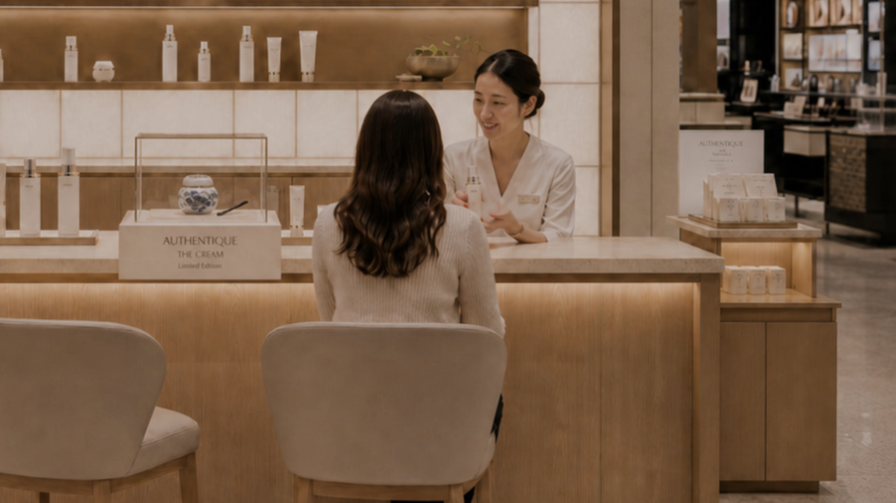
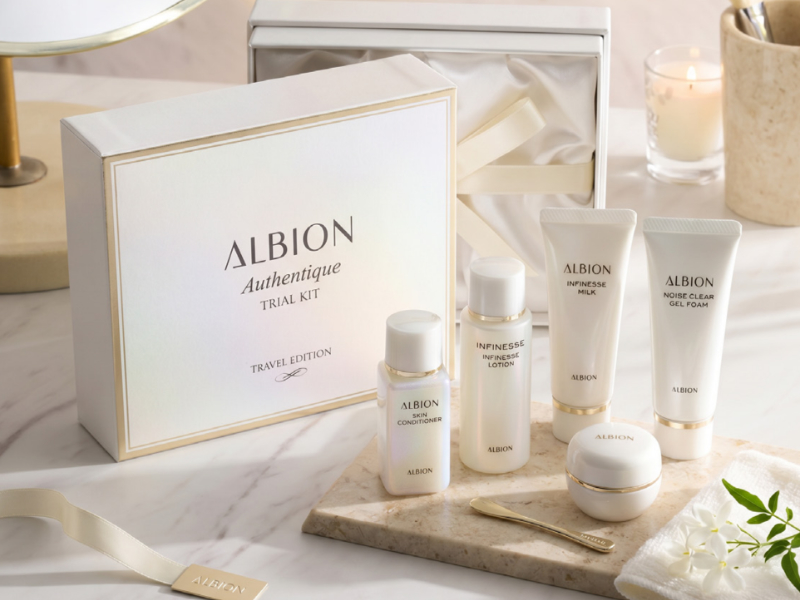
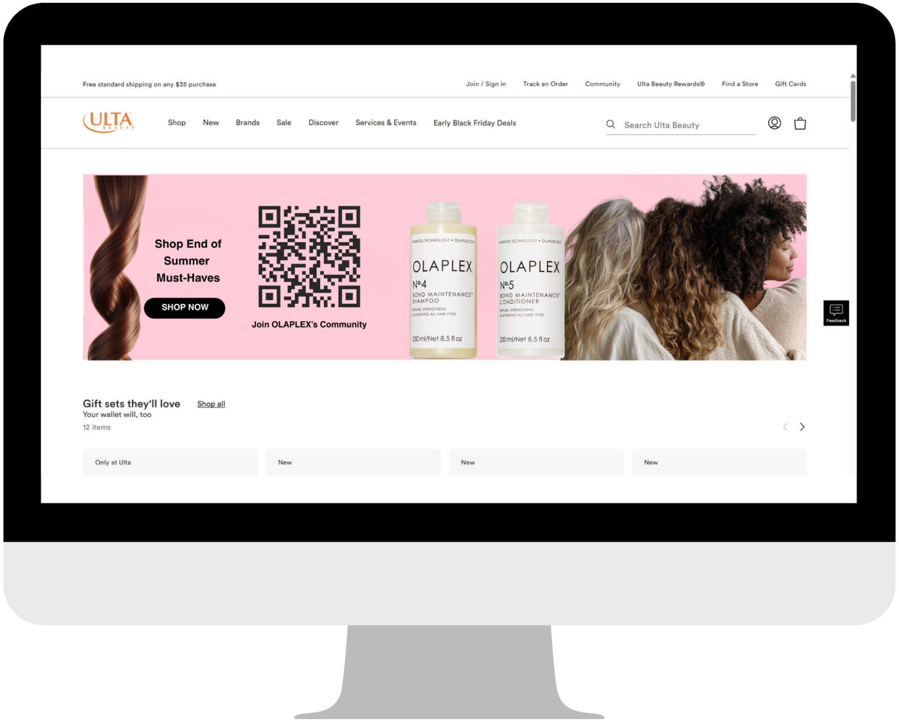
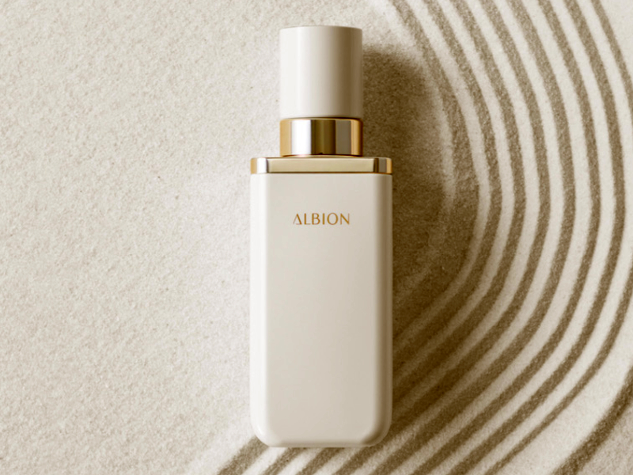

ALBION has a meaningful opportunity to grow in the U.S. prestige skincare market, but its success depends on more than simply increasing visibility. As a heritage Japanese skincare brand founded in 1956, ALBION already has the elements that many modern luxury beauty consumers are looking for: craftsmanship, ritual, high-quality formulations, Japanese manufacturing, ingredient integrity, and a philosophy rooted in long-term skin health rather than quick fixes.

KOSÉ explicitly positions ALBION within its high-prestige segment alongside other key profit-generating brands and identifies ALBION’s organic growth priorities as reinforcing its digital technology strategy, increasing customer touchpoints, preparing for the launch of an ALBION e-commerce site, and increasing the worldwide value of the brand through ALBION AUTHENTIQUE.
A selective, education-led US expansion building controlled prestige awareness through high-touch environments.
CULTIVATE
Ingredient-owned farms for high quality formula
INNOVATE
High investment in R&D and scientific innovation
HARMONIZE
Third-party testing and authenticity commitment
The brand carries deep prestige rooted in “Made in Japan” craftsmanship, and the primary research reinforced that product performance is one of its greatest assets, with all field-visit participants reporting immediate visible improvements, such as hydration and brightness, after treatment.
Its internal limitations in scale, as its reliance on in-person consultation, education, and a strict Japan-based production model makes rapid operational expansion more difficult.
Its potential to carve out a niche in the U.S. market by occupying a “scientific J-beauty” white space. There is a strong opportunity to alleviate consumer hesitation through lower-risk discovery models, such as discovery sets, sampling, and hero product entry points.
Generational perception disconnect: younger consumers may read the brand as more natural, minimal, or gentle without fully understanding its clinical efficacy, and may also gravitate toward faster, more algorithm-driven skincare habits rather than multi-step rituals.
The IMC campaign carries five Year-1 objectives that map directly to the customer journey and to the promotional architecture:

Increase brand awareness for ALBION
Clarify ALBION's U.S. positioning
Establish AUTHENTIQUE as the prestige halo line
Drive low-risk trials through guided consultation
Create a scalable brand-world model

In conclusion, ALBION's optimal growth opportunity within the U.S. market lies in enhancing its comprehensibility without compromising its inherent restraint. The brand should strive to maintain its commitment to service orientation and the depth of its rituals rather than conforming to a more overtly assertive market presence. Instead, by translating its core strengths through transparent storytelling, expert consultations, sampling initiatives, and strategically selected retail and spa environments, ALBION stands to establish a distinctive position within the U.S. prestige skincare market as a luxury skincare house offering a holistic philosophy centered on long-term skinhealth, balance, and regeneration.
Open to internships, collaborations, and conversations about luxury brand strategy.